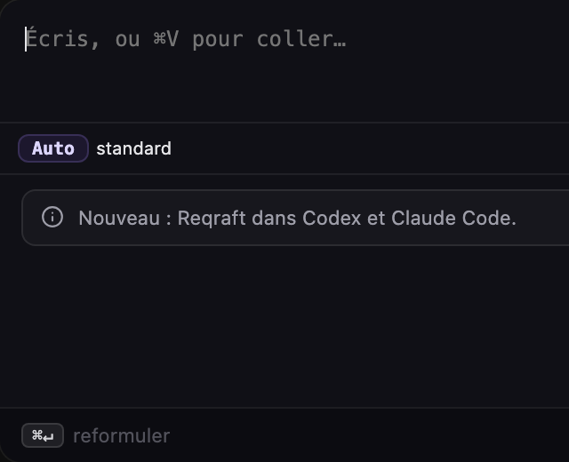
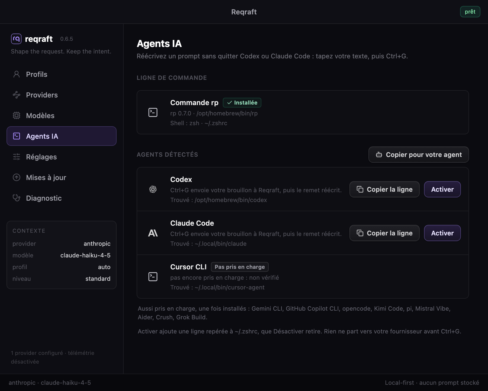
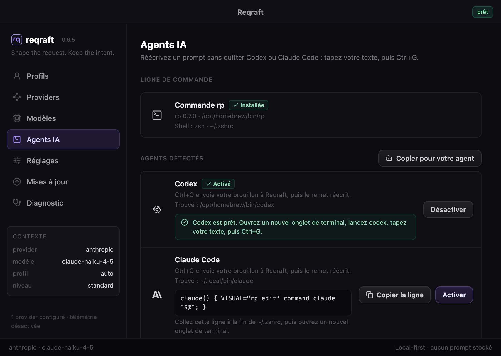
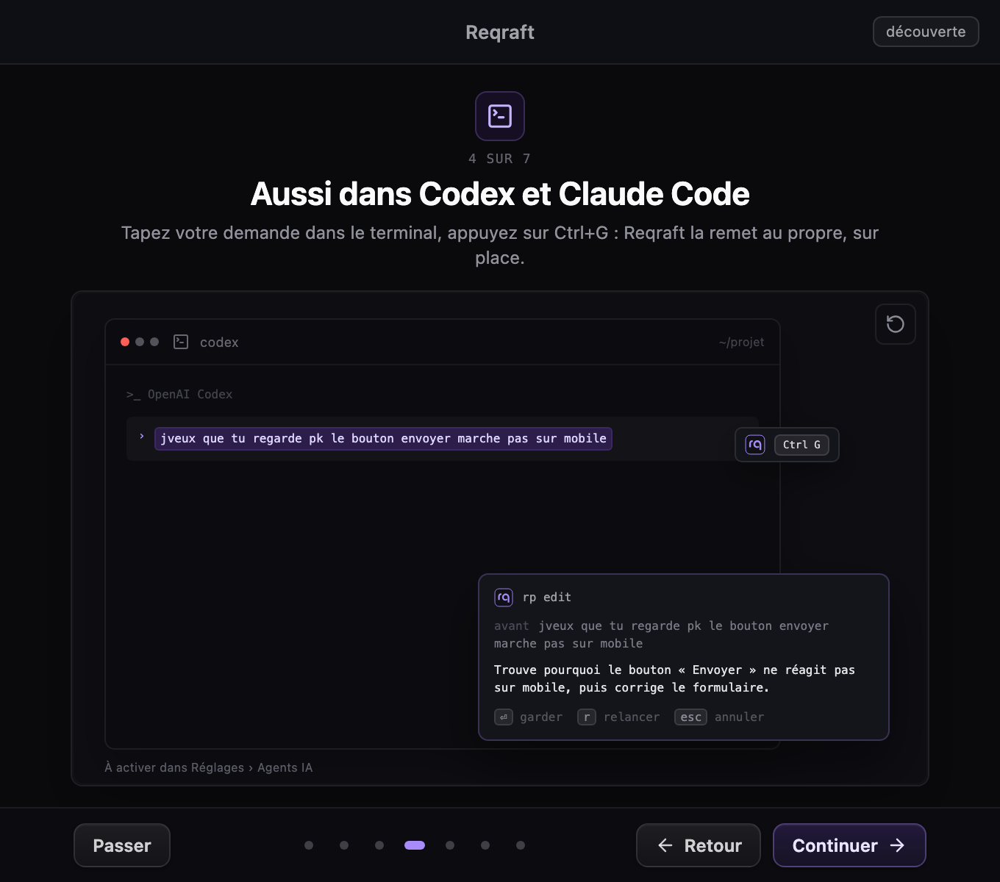
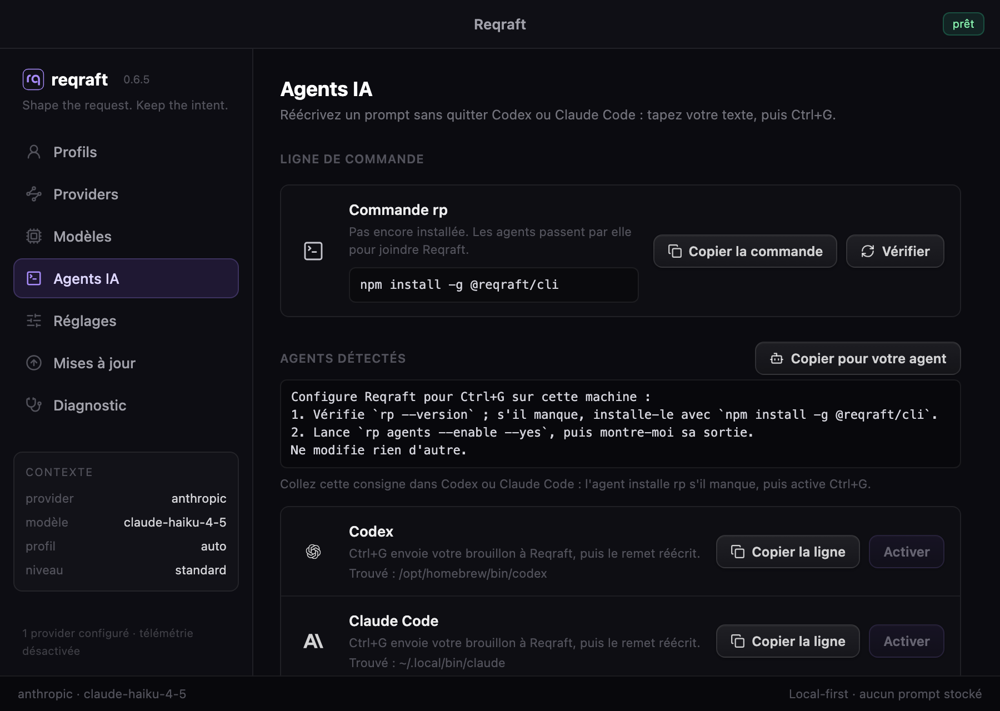

Reqraft · maquette
Ctrl+G dans Codex et Claude Code
Comment chaque utilisateur l'obtient, puis s'en sert. Les écrans de l'app sont rendus depuis le vrai code de Reqraft ; les écrans terminal sont reconstitués, car ils n'existent pas encore.
App déjà installée après la mise à jour






Nouvelle installation de l'app




Ligne de commande zsh, bash, fish ou PowerShell : Reqraft écrit dans le bon fichier, avec la bonne syntaxe
rp init
Agents IA
Codex et Claude Code peuvent envoyer leur brouillon à Reqraft avec Ctrl+G.
●Codex/opt/homebrew/bin/codex
●Claude Code~/.local/bin/claude
shellzsh · ~/.zshrc
activer
› Les ajouter pour moi
Je les copie moi-même
Copier une consigne pour mon agent
Plus tard
↑↓choisir⏎validerescpasser
rp init.Nouveau : Ctrl+G dans Codex et Claude Code. Activez-le avec rp agents.
rp agents
●Codex/usr/local/bin/codex · non activé
●Claude Code~/.local/bin/claude · non activé
Shell bash : ces lignes vont dans ~/.bashrc
# >>> reqraft agents >>> codex() { VISUAL="rp edit" command codex "$@"; } claude() { VISUAL="rp edit" command claude "$@"; } # <<< reqraft agents <<<
› Les ajouter pour moi
Je les copie moi-même
Copier une consigne pour mon agent
rp agents. Ici en bash ; en fish, ~/.config/fish/config.fish ; sous Windows, le profil PowerShell.Configure Reqraft pour Ctrl+G sur cette machine : 1. Vérifie `rp --version` ; s'il manque, installe-le avec `npm install -g @reqraft/cli`. 2. Lance `rp agents --enable --yes`…
• Ran rp --version
└ zsh: command not found: rp
• Ran npm install -g @reqraft/cli
└ added 1 package in 4s
• Ran rp agents --enable --yes
└ ✓ Codex et Claude Code activés dans ~/.zshrc
Reqraft est installé et Ctrl+G est activé pour Codex et Claude Code. Ouvre un nouvel onglet de terminal pour charger la ligne.
Ask Codex to do anything
rp agents ou l'app, collée dans Codex.Au quotidien
Tip: Press ctrl + g to edit your current draft in an external editor.
jveux que tu regarde pk le bouton envoyer marche pas sur mobile des fois ca fait rien quand jappuie, regarde le code du formulaire et corrige
GPT-6.1-Sol medium · ~/projet · weekly 49% left
avant
jveux que tu regarde pk le bouton envoyer marche pas sur mobile des fois ca fait rien quand jappuie, regarde le code du formulaire et corrige
après
Je veux que tu regardes pourquoi le bouton "Envoyer" ne fonctionne pas sur mobile. Parfois, il ne se passe rien quand j'appuie. Analyse le code du formulaire et corrige le problème.
⏎garderrrelancerescannuler
Je veux que tu regardes pourquoi le bouton "Envoyer" ne fonctionne pas sur mobile. Parfois, il ne se passe rien quand j'appuie. Analyse le code du formulaire et corrige le problème.
GPT-6.1-Sol medium · ~/projet · weekly 49% left
Je veux que tu regardes pourquoi le bouton "Envoyer" ne fonctionne pas sur mobile. Parfois, il ne se passe rien quand j'appuie. Analyse le code du formulaire et corrige le problème.
? for shortcuts